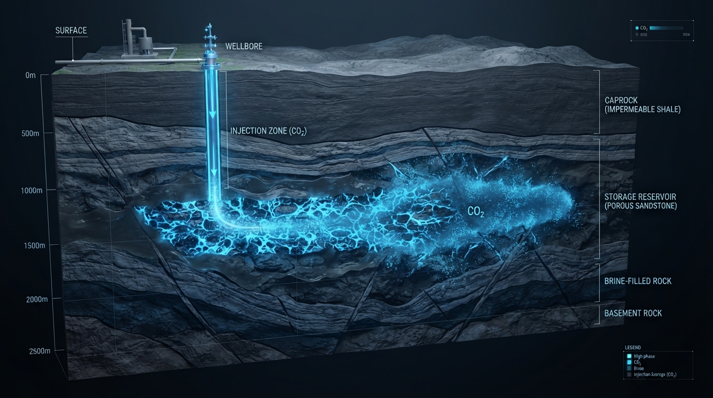

연구 분야Research Areas
석유·천연가스와 CO₂ 지중저장의 두 분야를 중심으로, 시뮬레이션·실험·인공지능을 결합한 연구를 수행합니다. 세부 연구 내용은 프로젝트 페이지에서 제공합니다.Our research is organized around two pillars — oil & natural gas and CO₂ geological storage — combining simulation, experiments, and AI. Detailed content is provided on the Projects page.
무엇을, 어떻게 연구하는가What we study, and how
석유·천연가스와 CO₂ 지중저장 — 두 분야 모두 시뮬레이션·실험·인공지능으로 접근합니다.Oil & natural gas and CO₂ geological storage — both approached through simulation, experiments, and AI.
| SIMULATION | EXPERIMENT | AI | |
|---|---|---|---|
| 석유·천연가스Oil & Natural Gas |
|
|
|
| CO₂ 지중저장CO₂ Geological Storage |
|
|
|

석유·천연가스Oil & Natural Gas
저류층에서 생산정, 파이프라인에 이르는 전체 생산 시스템을 대상으로 유동 해석과 최적화를 수행합니다. 셰일가스·치밀가스 등 비전통자원과 탄산염암 대상 회수증진(EOR)을 포함합니다.Flow analysis and optimization across the full production system — from reservoir to wells and pipelines — including unconventional resources (shale/tight gas) and EOR for carbonate reservoirs.

CO₂ 지중저장CO₂ Geological Storage
CO₂를 심부 지층에 안전하게, 더 많이 저장하기 위한 연구입니다. 주입·흡착 실험 기반 저장량 평가부터 저장소 시뮬레이션, AI 기반 예측·다목적 최적화까지 전주기를 다룹니다.Research to store CO₂ safely and at greater capacity — from experiment-based capacity assessment and site simulation to AI-driven prediction and multi-objective optimization.